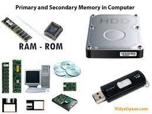

What is computer memory?
Computer memory is one of the most important parts of the computer. It stores and allows users to access the data anytime, anywhere they want. There are two types of computer memories.
- Volatile memory
- Non-Volatile memory
Volatile memory is termed as RAM which stands for Random access memory. While non-volatile stands for ROM which is an acronym for Read-only memory. Computer memory is based on the two factors that include access time and capacity. The faster the speed of the memory is the lesser will be the access time. A computer uses the memory which is organized in such a way that it enables largest capacity of the memory and the faster speed.